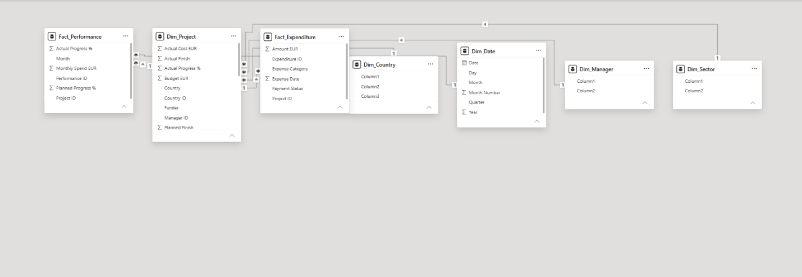

Project Performance & Portfolio Management Dashboard
An interactive dashboard developed to monitor project budgets, expenditure, budget utilisation, progress, status, country, sector and manager performance.
- Portfolio KPI monitoring
- Budget and expenditure analysis
- Actual vs planned progress
- Country, sector and manager analysis
- Interactive slicers and cross-filtering
